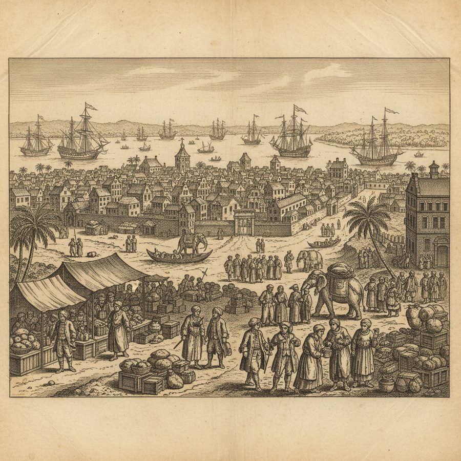
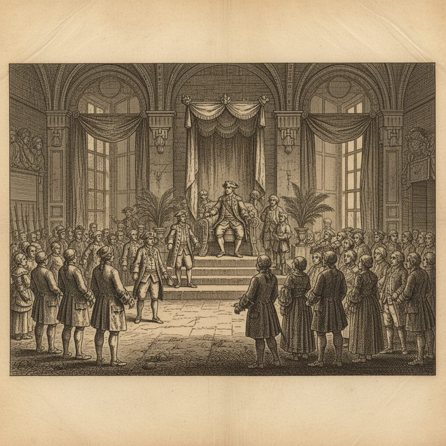
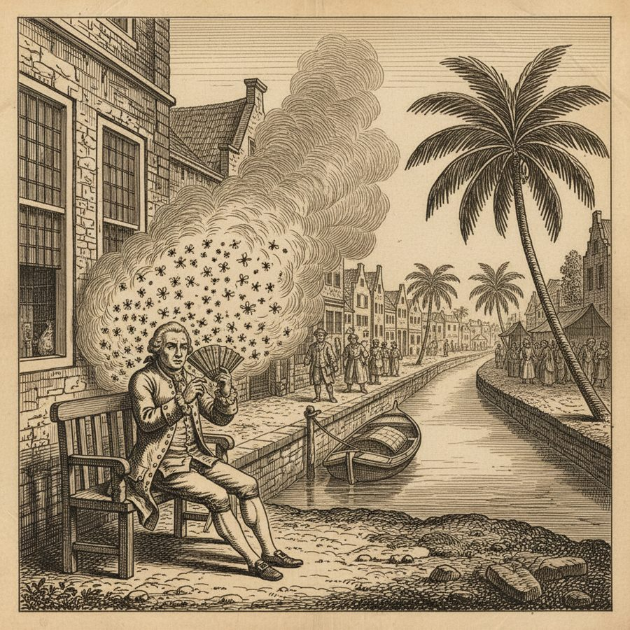
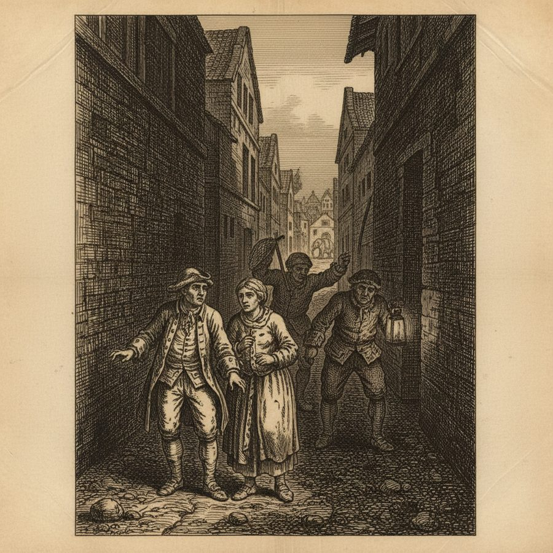
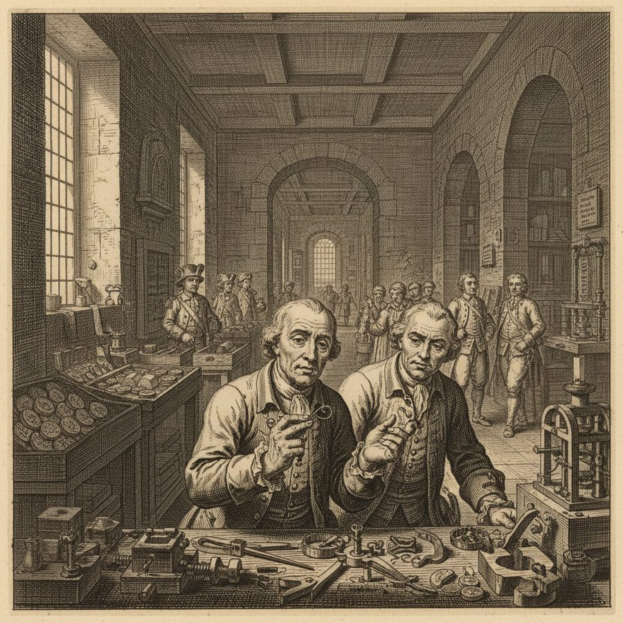

Batavia, the Dutch Emporium
The richest trading city on earth, its canals and mint, its 'Mutqueto' fly and its ruthless thief-catchers.
Batavia, 'the great emporium of the Dutch and of India,' astonished Noble as the richest city between the Cape and Canton — its canals, its mint striking dollars and rupees, the state and grandeur of its governor, and its situation and strength. But the city that made fortunes was also a place of climate and cruelty. Noble describes the torments of the 'Mutqueto' fly and the unhealthful air that wore down Europeans, and gives a cold little portrait of the 'Dutch thief-catchers': men who lay in wait for the Company's escaped soldiers and deserters, seizing on the miserable wretches and their ragged women to claim the reward — while, he reflects, one part of mankind stood 'so miserably subjected to the other.' Even the workmen gave him a curious observation: they confessed they could never bring their clock and watch-springs 'to a proper temper in hot countries.'
Figures: the Governor of Batavia, the Dutch, Noble
The story as a comic





Why it stands out
Batavia was the engine-room of the world's first great corporate empire, and Noble renders it with a merchant's eye for its riches and a traveller's eye for its shadows — the fly, the climate, and the thief-catchers preying on the poor.